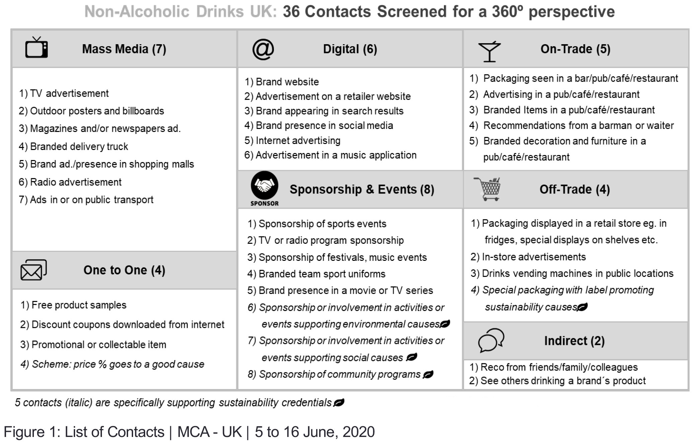
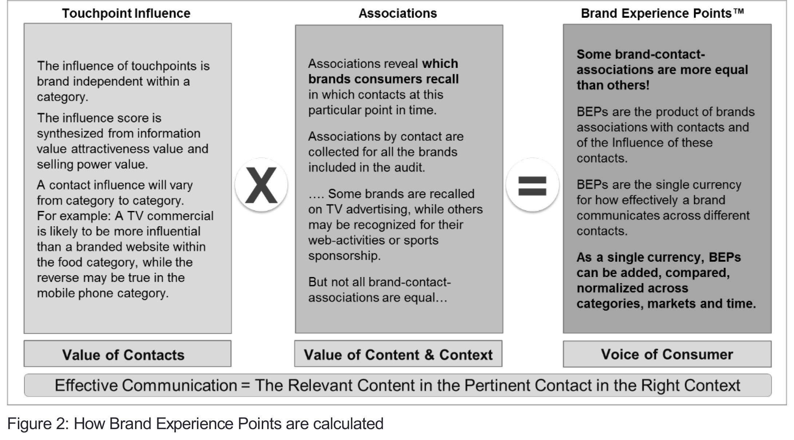
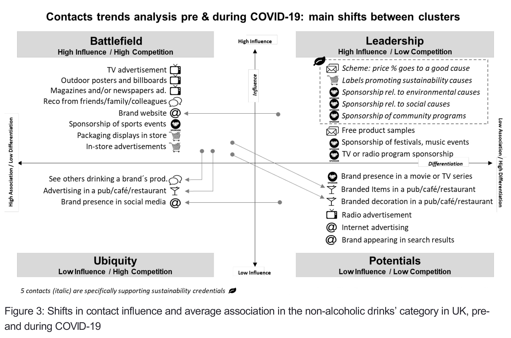
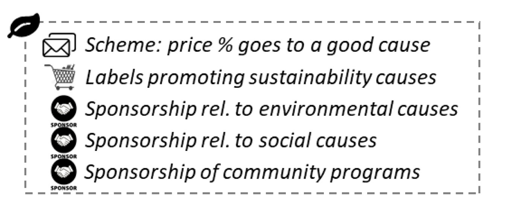

This research looks at 36 touchpoints for 18 non-alcoholic drinks brands through a methodology that
evaluates the relative influence of each touchpoint.
-
Insights from the changing impact of touchpoints and new consumer behaviours pre- and during
COVID-19 are shared.
-
As expected online interactions increased, whether for brand information or online shopping, and
digital touchpoints increased in influence compared to other channels.
-
A more surprising find was the continued effectiveness of soft drinks’ sports sponsorship during
lockdown.
Why it matters
Conducted during COVID-19, this single-source analysis of touchpoints in the non-alcoholic drinks category
shows changing touchpoint influence and evolving consumer behaviours.
Takeaways
-
Shopping behaviour adapted to the lockdown resulting in an increase of online interactions to obtain brand
information and shop for goods. The contribution of digital touchpoints increased by 56%.
-
Touchpoints providing an opportunity to communicate sustainability credentials presented clear
opportunities to influence with a difference. Few brands are leveraging this opportunity at scale.
-
As expected, there was a significant decrease across all brands in on-trade experiences. At sub-category
level, bottled waters and juices suffered the most significant decline.
-
The high influence and effective reach of TV advertising for soft drinks remains stable, with a noticeable
increase among centennials (aged 18–24).
-
Sport sponsorship by non-alcoholic drinks brands remains effective despite the suspension of live
activities. These activities are often developed consistently by brands over several years or sporting
seasons and end up establishing durable assets as engagement generators.
From a consumer perspective, while the COVID-19 pandemic is transforming the pattern of people’s day-to-day
lives, its most profound medium- to long-term impact will be to accelerate key trends that are not new. This will
include evolving consumer preferences, changing behaviour patterns and shifting touchpoint relevance and
influence.
In this article, informed by the latest research, we explore changing touchpoint influence and its effective reach.
We also share insights into the impact of the pandemic on channels, using the example of soft drinks.
We bring rigor to this through consistent “voice-of-the-consumer” based metrics that apply across all touchpoints
with brands across all channels. From the perspective of marketing methodology and effectiveness, only by
applying consistent metrics across multi-channel touchpoints between brands and consumers can such trends
be properly understood and the right responses be made. If you measure in fragments you can only manage in
fragments; if you measure holistically you can manage holistically.
The impact of the pandemic on contact (touchpoints) influence
Project Scope
In order to understand the impact of the pandemic on contacts and brands, we have undertaken a set of studies
during the May–June 2020 lockdown in the UK on three non-alcoholic drink categories. We compared the
results with the values obtained from our database of recent similar studies developed in European markets
(pre-COVID-19).
Project details (during COVID-19)
-
Market: UK.
-
Categories of non-alcoholic drinks: Carbonated soft drinks, bottled waters, juices, energy drinks,
vegetable milks and iced tea.
-
Respondent profile: Men and women aged 16 to 65 having consumed a non-alcoholic drink in the past
four weeks.
- Sample profile: 700 respondents, representative of the UK population
-
18 brands: Coca-Cola, Pepsi, Lemonaid+, J20, Red Bull, Lucozade, Volvic, Buxton, Highland Spring,
Tropicana, Innocent, Robinsons, Ribena, Capri-Sun, Lipton Ice Tea, Vita Coco, Whole Earth and Alpro.
- Fieldwork methodology: Online interviews.
- Fieldwork dates: 5 Jun 2020 to 16 Jun 2020.
-
Data captured: Contact influence, brand associations and brand experience points (BEPs) for all major
and key niche brands in the category

Methodology
Whether it is to strengthen sales in the short term or consumer engagement in the medium to long term, the
continuous improvement of communication effectiveness remains one of the biggest challenges for companies in
an environment where change is constant. In the current marketing environment there are:
- an ever more diverse universe of touchpoints;
- a better informed, but more sceptical and demanding consumer; and
- a constantly changing competitive, social and political context
That is without even mentioning the impact of the COVID-19 pandemic.
Steering brand strategy, fine tuning execution and optimising budget allocation requires robust insights into the
effective reach of all brand activities, versus competing brands. These insights much be comprehensive,
accurate, representative of real consumer perceptions and regularly updated. In this research, BEPs provide a
universal standard of measurement applicable to any touchpoint and any brand, without restriction in terms of
the category or market.
BEPs quantify how consumers experience brands through contacts, taking into account the content of the
message, the nature of the touchpoint (paid, owned and earned) and the context or the way it is used (a
promotional text, for example, can be targeted to consumers, irrespective of location or when they are standing
in front of the fixture in-store).

BEPs reflect what consumers perceive, rather than what they receive, and capture the impact of both creativity
and execution. BEPs measure the combined effectiveness of all brand encounters experienced by consumers.
The total brand’s score can then be normalised over the total of the category to calculate the brand experience
share (BES).
The BES represents the real outcome of the communication activities achieved by a brand, relative to
competitors. It is a proven early warning indicator of market share changes, correlating with market share
movement to 85% or better.
By their very nature, and thanks to the representativeness of the sample used, BEPs allow a multidimensional
analysis of the category: by brand, by touchpoint, by consumer segment, by region, by sales channel, by
product category and by any other criteria. This makes it easy to unveil the ‘must win’ battles across consumer
journeys and align with the strategic choices and immediate tactical actions needed to defend share, build brand
equity and optimise budget allocation.
Results: Effective reach of contacts (pre- vs. during COVID-19)
The horizonal axis in Figure 3 shows the universe of contacts in non-association, i.e. the reach across all
brands. The vertical axis maps the non-alcoholic drinks’ category according to its influence and the highest
values are plotted on the left-hand side. This highlights the power of each touchpoint to differentiate: the lower
the average associations with a touchpoint (i.e. the fewer brands it is associated with), the more it differentiates.
On the upper left cluster, called the ‘Battlefield’, we see contacts that are highly influential but also heavily
contested. On the opposite side, in the ‘Leadership’ cluster, we find the best options to build an influential and
differentiating experience.

Shifts and insights in the effective reach of key contacts pre- and during
COVID-19
Television advertising
Despite advertisers spending less time and money on TV ads,1
the effective reach of TV advertising in the nonalcoholic drinks’ category remained stable between the two periods. We note that the contribution of centennials
(aged 18–24) to the category experience, increased by 15%, thus compensating for the slight reduction
observed among the other age brackets
On-trade contacts
As expected, the effective reach of contacts in hotels, restaurants and cafes showed a significant drop in terms
of both influence and associations. Their contribution to brand experience dropped between 20% and 40%
depending on the touchpoint. Branded decoration and furniture in pubs, cafés and restaurants declined the most
during lockdown.
The analysis by sub-category shows that bottled waters and juices suffered the most significant decline: around
60% on average. For the corresponding brands, the loss was two and a half times greater amongst consumers
over the age of 35.
On-trade interactions as a whole should gradually regain its essential role in the consumer’s journey in phase
with the resumption of commercial activities in hotels, restaurants and cafés.
As the world shifts towards the ‘new normal’, brands need to keep track of how quickly these contacts are
regaining their importance and what has changed. For example, some restaurants are now suggesting that
customers read the menu on their phones by scanning a code, rather than handling a physical menu. This will
impact the way brands can deliver experiences
Indirect (or physical/analogue-earned contacts)
While the figures for recommendations from friends, family and colleagues remained stable, we can see a loss of
influence (-12%) of the touchpoint “See others drinking a brand’s product”, (usually ranked in 10th–15th place)
which naturally follows the trend of the hotels, restaurants and cafés sector.
Off-Trade (point of sale)
The continuity of commercial activities in the food sector has clearly benefited the contacts of this group, which
practically maintained their pre-COVID-19 level of effective reach for all brands.
Digital
The pandemic has reshaped the behaviour of consumers who, among other things, have increased their level of
activity on the internet, be it to obtain information or to shop. This impact is felt even within categories of this
type (food & beverages) where the importance of digital in the construction of brands was still limited compared
to traditional media and on-/off-trade activities.
During the COVID-19 crisis, the digital group of contacts (detailed in Figure 1) reached second place in terms of
contribution with 15%, following traditional media with 23%. This average contribution increased by 56%
compared to pre-COVID-19 measurements. The two most contributive digital contacts are “Brand Website” and
“Brand presence in social media” respectively responsible for 3.8% and 2.6% of the total brand experience of
the category. However, overall social media remained low in influence for shoppers for the non-alcoholic drinks’
category.
It would likely be insightful to undertake further tracking in the near term to detect the effect of Coca-Cola and
other major brands pulling out from social media advertising.
2
Sponsorship
Sports sponsorship of non-alcoholic drinks continued to deliver effective reach despite the suspensions of live
events, reflecting carry-over effects as well as the impact of ‘rewind’ sports documentaries aired on TV
channels. These activities are often developed consistently by brands over several years and/or sporting
seasons and end up constituting durable assets as an engagement generator. The reach of all other
sponsorship activities was low.
Sustainability
All five touchpoints supporting sustainability credentials were high in influence. However, few brands are yet
leveraging their sustainability credentials at scale.

In Conclusion
The uncertainties caused by the pandemic underline the necessity to measure holistically and regularly.
Holistically so that we can:
- unveil opportunities in the category and benchmark with the competition in market;
-
diagnose our strengths and better plan our next marketing move; and
- optimise resources.
Regularly so that we can:
-
Remain ahead of the curve;
-
Better understand the effects of our activities; and
- Dare, pilot and innovate to engage with the post-COVID-19 consumer, whose habits may have changed
Sources
By Eric Dherte, published on